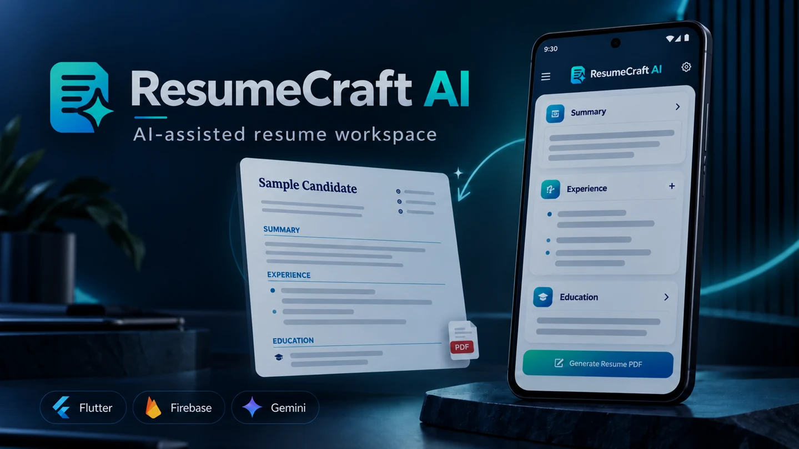

ResumeCraft AIAI ResumeWorkspace
AI-assisted resume workspace combining profile editing, role-focused content improvement, customizable templates, PDF export, account authentication, and cloud synchronization through application workflows.
View on GitHub